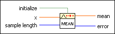

Mean PtByPt VI
Owning Palette: Probability & Statistics PtByPt VIs
Requires: Full Development System
Computes the mean, or average, of the values in the set of input data points specified by sample length. If the number of values is less than the sample length, the VI uses the number of values to compute the mean.
This VI is similar to the Mean VI.
 | Note By default, reentrant execution is enabled in all Point By Point VIs. |

 Add to the block diagram Add to the block diagram |
 Find on the palette Find on the palette |